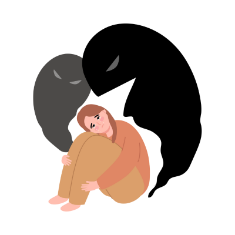

What is Post-Traumatic Stress Disorder (PTSD)?

Post-Traumatic Stress Disorder (PTSD) is a mental health condition triggered by experiencing or witnessing a
traumatic event. It is characterized by symptoms such as flashbacks, nightmares, and severe anxiety, which
may persist for months or even years after the traumatic experience.
PTSD can significantly impact a person's emotional well-being and daily functioning. However, with the right
support and treatment, individuals with PTSD can recover and manage their symptoms effectively.
Symptoms of Post-Traumatic Stress Disorder
The symptoms of PTSD can vary, but common signs include:
- Flashbacks: Reliving the traumatic event through vivid and distressing memories or
flashbacks.
- Nightmares: Recurring, disturbing dreams about the traumatic experience.
- Emotional Numbness: Feeling detached or emotionally distant from others, along with
difficulty experiencing positive emotions.
- Avoidance: Avoiding reminders of the trauma, such as places, people, or activities that
may trigger memories.
- Hyperarousal: Being easily startled, feeling tense or irritable, or having trouble
sleeping.
Causes of Post-Traumatic Stress Disorder
The exact cause of PTSD is not fully understood, but several factors can contribute to its development:
- Trauma: Experiencing or witnessing a traumatic event, such as combat, natural disasters,
accidents, or violent assaults, is the primary risk factor for PTSD.
- Genetics: A family history of mental health disorders may increase the likelihood of
developing PTSD.
- Brain Chemistry: Certain changes in the brain's chemistry and structure may make some
people more susceptible to PTSD.
- Environmental Stress: Ongoing stressors, such as financial difficulties or social
isolation, may exacerbate PTSD symptoms.
Treatment for Post-Traumatic Stress Disorder
There are several effective treatments available to help manage PTSD symptoms:
- Cognitive Behavioral Therapy (CBT): CBT, particularly a type called Prolonged Exposure
Therapy (PE), is an effective treatment for PTSD. It involves facing the trauma and working through
distressing memories.
- Eye Movement Desensitization and Reprocessing (EMDR): EMDR involves processing traumatic
memories through guided eye movements, helping individuals reframe negative associations with the
trauma.
- Medication: Antidepressants, such as SSRIs, can help manage PTSD symptoms by balancing
brain chemicals.
- Support Groups: Participating in support groups with others who have experienced trauma
can help reduce feelings of isolation and provide comfort and understanding.
Consulting a mental health professional is crucial for identifying the most suitable treatment plan for
individuals with PTSD.